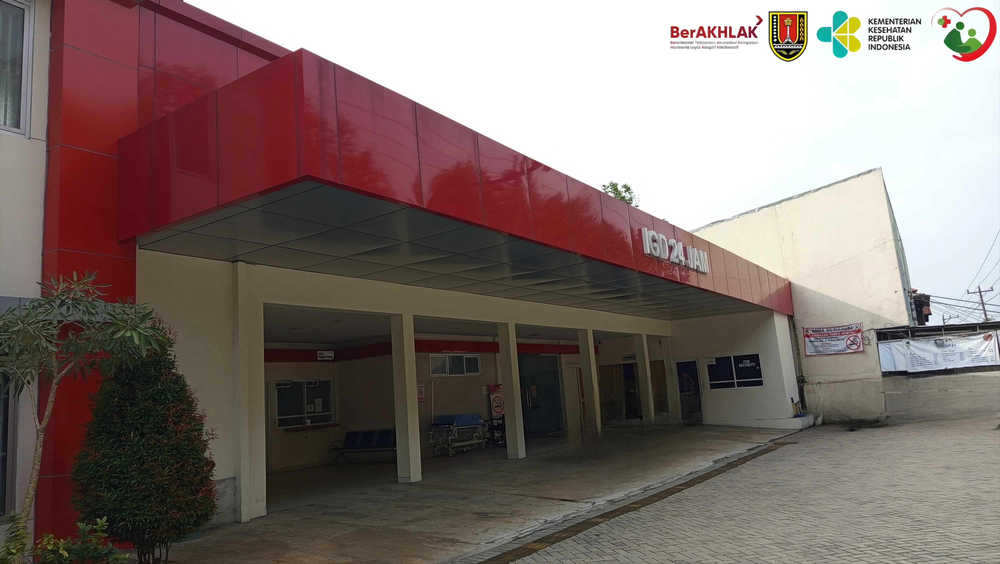

FASILITAS RSUD MIJEN
RSUD Mijen menyediakan berbagai fasilitas pelayanan kesehatan yang lengkap dan modern untuk memenuhi kebutuhan masyarakat Kota Semarang dan sekitarnya.
LAYANAN RAWAT JALAN
Pelayanan rawat jalan RSUD Mijen adalah sebagai berikut:
Poli Gigi
Poli Anak
Poli Bedah
Poli Penyakit Dalam
Poli DOTS
Poli Psikiatri
Poli Obgyn
Poli VCT
LAYANAN RAWAT INAP
Pelayanan rawat inap RSUD Mijen adalah sebagai berikut:
KAMAR VIP
- 1 Tempat Tidur Automatic
- AC
- Pemanas
- TV
- Kulkas
- Lemari Penyimpanan
- Kursi Penunggu
KAMAR KELAS 1
- 2 Tempat Tidur
- AC
- Lemari Penyimpanan
- Kursi Penunggu
KAMAR KELAS 3
- 4 Tempat Tidur
- AC
- Lemari Penyimpanan
- Kursi Penunggu
BANGSAL PSIKIATRI
- 2 Tempat Tidur
- AC
- Lemari Penyimpanan
- Kursi Penunggu
LAYANAN UGD
Pelayanan Gawat Darurat 24 Jam
TENTANG UGD
UGD adalah suatu tempat atau unit di RSUD Mijen yang memiliki tim kerja dengan kemampuan khusus dan peralatan yang memberikan pelayanan pasien gawat darurat dan merupakan upaya penanggulangan pasien gawat darurat yang memberikan pelayanan kesehatan selama 24 jam.
FASILITAS KAMI
UGD RSUD Mijen dilengkapi dengan fasilitas modern dan tim medis profesional untuk memberikan pelayanan terbaik dalam situasi darurat.
Bedah Minor
Prosedur operasi kecil untuk luka atau kondisi darurat ringan.
PONEK
Pelayanan Obstetri Neonatal Emergensi Komprehensif - Penanganan khusus untuk ibu hamil dan bayi baru lahir dalam keadaan darurat.
Triase
Sistem pemilahan pasien berdasarkan tingkat kegawatan untuk memprioritaskan penanganan.
Ruang Ponek
Ruang IGD
JAM LAYANAN
UGD RSUD Mijen buka 24 jam setiap hari, termasuk hari libur nasional.
Tim medis kami siap memberikan pertolongan pertama dalam situasi darurat kapan saja.
VK DERINA
Ruang Bersalin dan Perawatan Neonatal Terpadu
TENTANG VK DERINA
VK adalah ruangan bersalin dan Perina ruangan perawatan Khusus Bayi baru lahir yang bermasalah di RSUD Mijen. Kami menyediakan pelayanan komprehensif untuk ibu bersalin dan perawatan bayi baru lahir dengan fasilitas modern dan tim medis berpengalaman.
RUANG VK (Vaginal Klinik)
Fasilitas ruang VK kami dirancang untuk kenyamanan proses persalinan dengan standar kebersihan dan keamanan tinggi.
Fasilitas VK-DERINA
Fasilitas VK-DERINA
Fasilitas Ruang VK
- Dua tempat tidur bersalin
- Kamar mandi khusus
- Ruang observasi
- Pemantauan kondisi ibu dan bayi
Tim Medis VK
- Dokter spesialis kandungan
- Bidan berpengalaman
- Perawat neonatal
- Tim gawat darurat kebidanan
RUANG PERINA (Perinatologi)
Ruang Perina kami dilengkapi dengan peralatan khusus untuk perawatan bayi baru lahir yang memerlukan penanganan intensif.
Fasilitas Perina
- Inkubator modern
- CPAP (alat bantu nafas untuk bayi)
- Bed side monitor
- Box bayi khusus
- Oksigen central
- Pengatur suhu ruangan
Layanan Perina
- Perawatan bayi prematur
- Bantuan pernapasan neonatal
- Pemeriksaan laboratorium khusus
- Terapi obat intensif
- Pemantauan jantung 24 jam
JAM KUNJUNG
- Senin - Jumat: 10.00 - 12.00 dan 16.00 - 18.00
- Sabtu - Minggu: 10.00 - 12.00
- Khusus ayah/bayi dapat mengunjungi kapan saja dengan izin perawat
INTENSIVE CARE UNIT (ICU)
Unit Perawatan Intensif dengan Fasilitas Terbaik
FASILITAS DAN PERALATAN ICU
Oksigen Central
Sistem oksigen terpusat yang selalu siap untuk mendukung pernapasan pasien dengan suplai oksigen yang stabil dan terkontrol.
EKG (alat rekam jantung)
Peralatan untuk memantau aktivitas listrik jantung secara terus menerus, mendeteksi kelainan irama jantung.
Infus Pump dan Syringe Pump
Alat untuk pemberian cairan infus dan obat secara presisi dengan dosis yang terkontrol ketat.
Ventilator (mesin penunjang pernapasan)
Mesin yang membantu atau menggantikan fungsi pernapasan pasien yang mengalami gangguan pernapasan berat.
Bed side monitor (pemantau tanda vital)
Monitor yang menampilkan parameter vital pasien seperti detak jantung, tekanan darah, saturasi oksigen secara real-time.
Defibrilator (alat kejut jantung)
Alat untuk mengembalikan irama jantung normal pada pasien yang mengalami henti jantung atau aritmia berbahaya.
Emergency KIT dan obat-obatan Emergency
Perlengkapan dan obat-obatan darurat yang selalu siap untuk menangani berbagai kondisi gawat darurat.
LABORATORIUM KIMIA KLINIK
Melayani berbagai pemeriksaan laboratorium dengan akurasi tinggi dan hasil cepat
Elektrolit & Mineral
Kalium
Pemeriksaan kadar kalium dalam darah
Natrium
Pemeriksaan kadar natrium dalam darah
Klorida
Pemeriksaan kadar klorida dalam darah
Kalsium
Pemeriksaan kadar kalsium dalam darah
Magnesium
Pemeriksaan kadar magnesium dalam darah
Jantung & Inflamasi
Troponin I
Pemeriksaan untuk diagnosis serangan jantung
CRP
C-Reactive Protein, penanda inflamasi
CKMB
Creatine Kinase-MB, penanda kerusakan otot jantung
Gula Darah & Metabolik
Gula darah sewaktu
Pemeriksaan gula darah tanpa puasa
Gula darah puasa
Pemeriksaan gula darah setelah puasa 8 jam
Gula darah 2 jam PP
Pemeriksaan gula darah 2 jam setelah makan
Tes Toleransi Glukosa Oral (TTGO)
Pemeriksaan untuk diagnosis diabetes
Lipid
Cholesterol total
Pemeriksaan kadar kolesterol total
HDL-Cholesterol
Kolesterol baik (High-Density Lipoprotein)
LDL-Cholesterol
Kolesterol jahat (Low-Density Lipoprotein)
Trigiserid
Pemeriksaan kadar trigliserida
Fungsi Hati
SGOT
Serum Glutamic Oxaloacetic Transaminase
SGPT
Serum Glutamic Pyruvic Transaminase
Bilirubin Total
Pemeriksaan kadar bilirubin total
Bilirubin Indirek
Pemeriksaan kadar bilirubin tidak terkonjugasi
Bilirubin Direk
Pemeriksaan kadar bilirubin terkonjugasi
Gamma GT
Gamma Glutamyl Transferase
Alkali Fosfatase
Enzim yang terkait dengan hati dan tulang
Fungsi Ginjal
Ureum
Pemeriksaan kadar ureum darah
Kreatinin
Pemeriksaan fungsi ginjal
Asam Urat
Pemeriksaan kadar asam urat darah
Imunoserologi
Widal
Pemeriksaan untuk demam tifoid
HBsAg
Pemeriksaan antigen hepatitis B
Anti HBs
Antibodi terhadap hepatitis B
Anti HCV
Antibodi terhadap hepatitis C
Anti HIV
Pemeriksaan skrining HIV
Dengue IgG/IgM
Pemeriksaan untuk demam berdarah
NS 1
Pemeriksaan dini demam berdarah
Hormon & Tumor Marker
FT3
Free Triiodothyronine, pemeriksaan fungsi tiroid
FT4
Free Thyroxine, pemeriksaan fungsi tiroid
TSH
Thyroid Stimulating Hormone
AFP
Alpha-Fetoprotein, penanda tumor hati
CEA
Carcinoembryonic Antigen, penanda tumor saluran cerna
CA-125
Penanda tumor ovarium
CA-15.3
Penanda tumor payudara
CA 19-9
Penanda tumor pankreas
HCG Titer
Human Chorionic Gonadotropin, untuk kehamilan dan tumor
Protein
Total Protein
Pemeriksaan kadar protein total darah
Albumin
Pemeriksaan kadar albumin darah
Globulin
Pemeriksaan kadar globulin darah